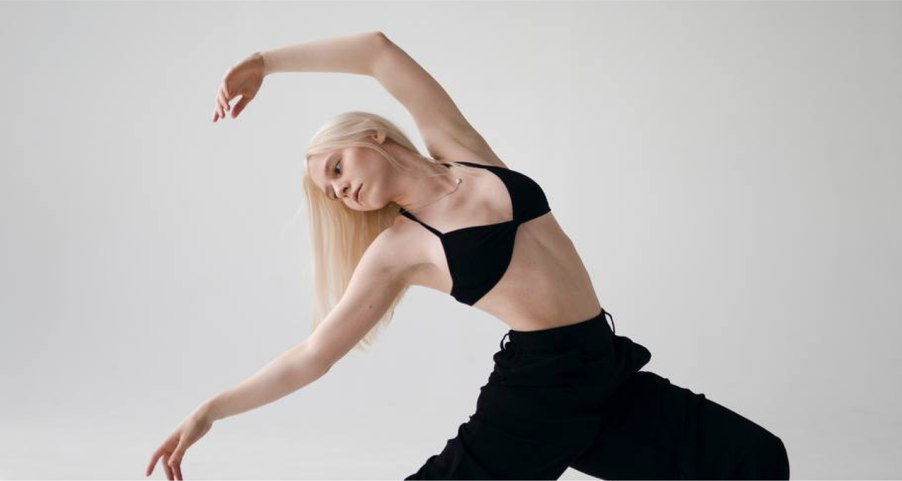
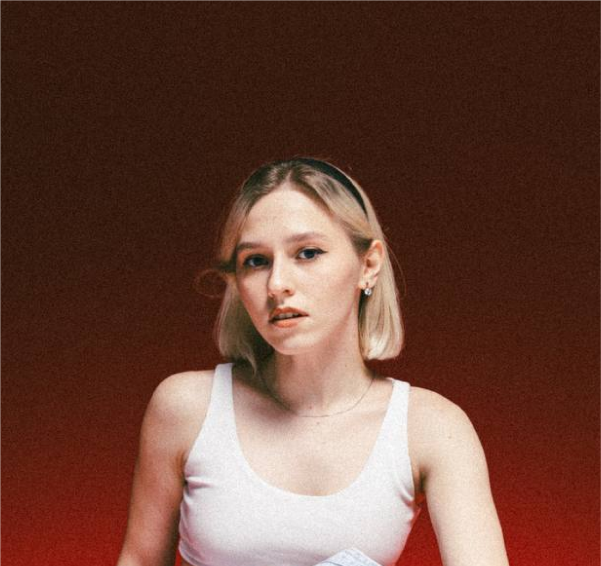
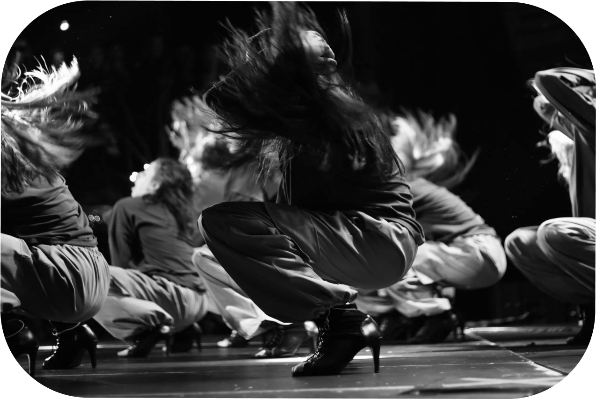
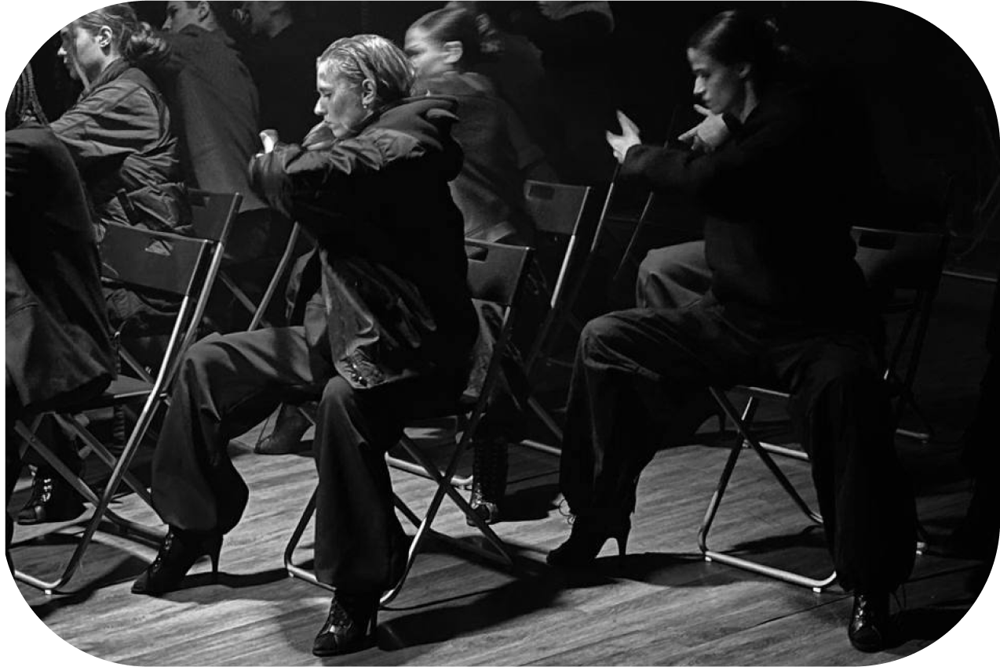

Все стили, которые я осваивала, стали основой моего развития, ведь они позволяют комбинировать элементы женственного танца с динамикой уличных стилей.
High heels — это вершина этой эволюции: стиль, который требует безупречной техники, силы и уверенности.
СОФЬЯ
ДУБОВИЦКАЯ
ДУБОВИЦКАЯ
ПРЕПОДАВАТЕЛЬ
HIGH HEELS

HIGH HEELS
Постоянная работа над техникой, изучение новых стилей
и стремление к самосовершенствованию позволяют танцору
достигать высоких результатов.
и стремление к самосовершенствованию позволяют танцору
достигать высоких результатов.
МОЙ ПУТЬ
СОФЬЯ ДУБОВИЦКАЯ
Преподаватель HIGH HEELS

КРАТКАЯ БИОГРАФИЯ
За моими плечами 14 лет опыта в танцевальной индустрии, и с ранних лет я постоянно исследую новые стили и стремлюсь к развитию.
За это время я освоила такие направления,
как contemporary с элементами джаз-модерна, dancehall, hip-hop и high heels.
Каждый этап моей карьеры был насыщенным, позволяя учиться и расти вместе с командами,
в которых я выступала.
За это время я освоила такие направления,
как contemporary с элементами джаз-модерна, dancehall, hip-hop и high heels.
Каждый этап моей карьеры был насыщенным, позволяя учиться и расти вместе с командами,
в которых я выступала.
ПОЧЕМУ HIGH HEELS?


Именно эта многогранность привлекает меня
в high heels: ты можешь быть одновременно нежной и сильной, создавая иллюзии, используя пластику тела и хореографию, заимствованную из других стилей.
в high heels: ты можешь быть одновременно нежной и сильной, создавая иллюзии, используя пластику тела и хореографию, заимствованную из других стилей.